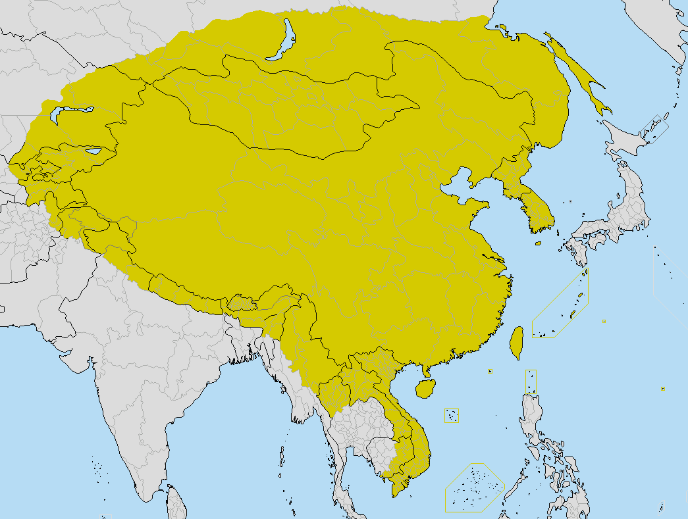
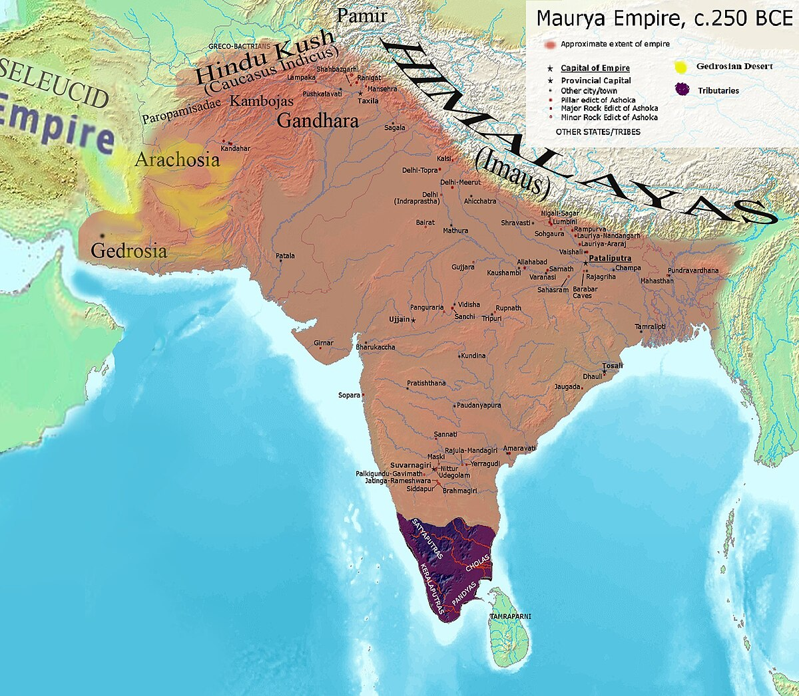
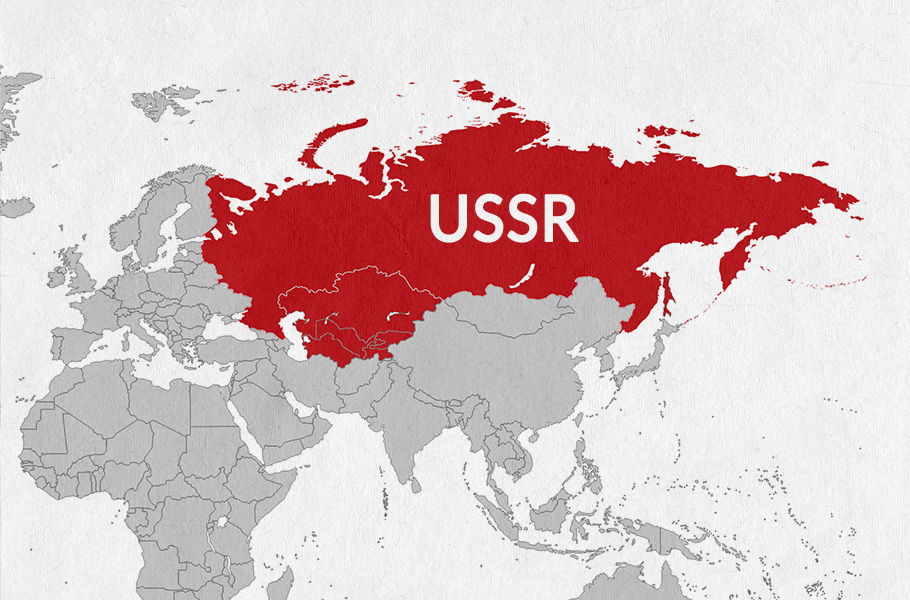

Some Information bout my favourite empires
- 
The Qing Dynasty, also known as the Manchu Dynasty, was the last imperial dynasty in Chinese history, reigning from 1644 to 1911/12.
- 
The Maurya Dynasty, founded by Chandragupta Maurya in 321 BC, was the first large, unified empire in the Indian subcontinent, lasting until 185 BC

The Persian Empire, also known as the Achaemenid Empire, was a vast empire centered in modern-day Iran, spanning from the 6th century BC to 330 BC
- 
The USSR, or Union of Soviet Socialist Republics, was a transcontinental country that existed from 1922 to 1991, spanning much of Eurasia